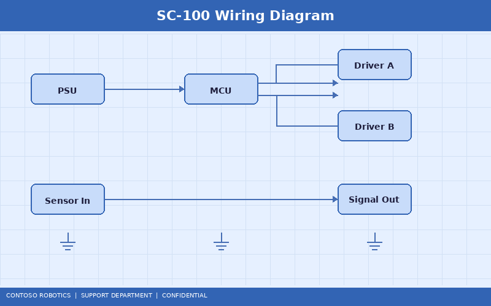
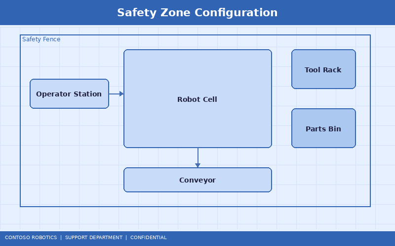
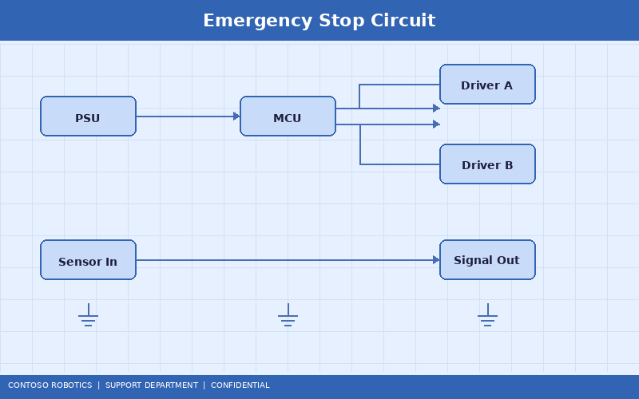

Safety Controller SC-100 Configuration Guide
The Safety Controller SC-100 is the certified safety system integrated into every CoBot Pro 500 and CoBot Pro 700 control cabinet. It monitors and enforces safety parameters in real time, independent of the main CoBot OS v4.2 processor. This guide covers safety zone setup, speed and force limit configuration, emergency stop wiring, and safety I/O mapping. For low-level firmware details and update procedures, refer to the Safety Controller Firmware document in the Engineering documentation.
1. SC-100 Architecture Overview
The SC-100 uses a dual-channel redundant architecture certified to SIL 3 (IEC 61508) and PL e, Category 4 (ISO 13849-1):
- Processor A (monitoring): ARM Cortex-R5, 400 MHz, dedicated to safety function execution
- Processor B (checking): Independent ARM Cortex-R5, cross-checks Processor A outputs every 1 ms
- Safe I/O: 4 safe digital inputs (SI1–SI4), 2 safe digital outputs (SO1–SO2), all redundant and monitored
- Communication: Safety-over-EtherCAT (FSoE) to the main controller, CIP Safety optional module available
- Reaction time: 8 ms worst-case from hazard detection to Safe Torque Off (STO)

2. Safety Zone Configuration
The SC-100 supports up to 8 configurable safety zones that restrict the robot's workspace:

- Open CoBot Studio IDE and navigate to Safety → Zone Configuration.
- Enter the safety configuration password (default: set during commissioning; cannot be recovered—store securely).
- Define zones using one of the following shapes:
- Cylindrical: Center point (X, Y), radius, height range (Z_min, Z_max)
- Rectangular prism: Min/max corners in (X, Y, Z)
- Convex polygon: Up to 12 vertices in the XY plane, with Z range
- Assign a safety response to each zone:
- Zone Type 0 (Normal): Full speed and force limits apply
- Zone Type 1 (Reduced): TCP speed limited to 250 mm/s, force limited to 150 N
- Zone Type 2 (Restricted): Robot stops if TCP enters this zone (configurable reaction: STO or Safe Stop 1)
- Validate the configuration by running the Zone Boundary Test: the robot traces the zone perimeter at 10% speed while the SC-100 verifies detection at all boundary points.
- Lock the configuration. Changes require re-entering the safety password and performing a validation restart.
3. Speed and Force Limits
Configure speed and force thresholds to comply with ISO/TS 15066 power and force limiting (PFL) requirements:
| Parameter |
Default Value |
Configurable Range |
ISO/TS 15066 Reference |
| TCP speed (collaborative mode) |
250 mm/s |
1–1500 mm/s |
Table A.2 (transient contact) |
| TCP force limit |
150 N |
10–500 N |
Table A.2 (body region dependent) |
| Joint torque limit (per joint) |
See joint specs |
10–100% of rated torque |
— |
| Momentum limit |
Auto-calculated |
Based on payload + speed |
Clause 5.5.4 |
| Power limit |
80 W |
10–300 W |
Table A.2 |
To configure, navigate to Safety → Force/Speed Limits in CoBot Studio IDE. After modifying any value, the SC-100 requires a safety validation restart (the robot performs a controlled stop, verifies the new parameters, and restarts the safety monitoring loop).
4. Emergency Stop Configuration
The SC-100 supports a daisy-chained emergency stop circuit with up to 10 devices:

- Wire each E-Stop device in series using the dual-channel (NC+NC) configuration. Use shielded cable, 0.75 mm² minimum.
- Connect the chain to SC-100 terminals SI1A/SI1B (channel A) and SI2A/SI2B (channel B).
- The SC-100 monitors both channels simultaneously. A discrepancy between channels triggers a fault (error code S-003: E-Stop Channel Mismatch).
- Test each E-Stop device individually: press the button and verify STO activation within 150 ms (displayed on the teach pendant under Safety → Diagnostics).
- After releasing an E-Stop, a manual reset is required: press the Safety Reset button on the teach pendant or control cabinet.
5. Safety I/O Mapping
The remaining safe I/O can be mapped to external safety devices:
- SI3: Safety light curtain input (e.g., Contoso SafeGuard LC-400). When interrupted, reduces robot to Zone Type 1 speed.
- SI4: Safety interlock switch for enclosure door. When open, activates STO.
- SO1: Safe speed indicator output. Goes HIGH when the robot is operating below the collaborative speed threshold.
- SO2: Robot-in-motion indicator. Goes HIGH whenever any joint is moving.
Configure I/O mapping in Safety → I/O Configuration. Each input/output has configurable debounce time (1–100 ms), polarity (normally open/normally closed), and response action.
6. Configuration Backup and Audit Trail
The SC-100 maintains a tamper-evident audit log of all safety configuration changes. To export:
- Navigate to Safety → Audit Log → Export.
- Save the cryptographically signed log file (.slog) to a USB drive.
- The log includes timestamps, user identifiers, parameter changes, and validation results.
- This log is required for ISO 10218 compliance audits and should be archived per your facility's records retention policy.
For a comprehensive overview of the safety standards and compliance certifications applicable to the CoBot Pro, refer to the Safety Standards & Compliance Overview in the Support documentation.
Document version 4.2.0 | Last updated: 2025-01-15 | Contoso Robotics Technical Support